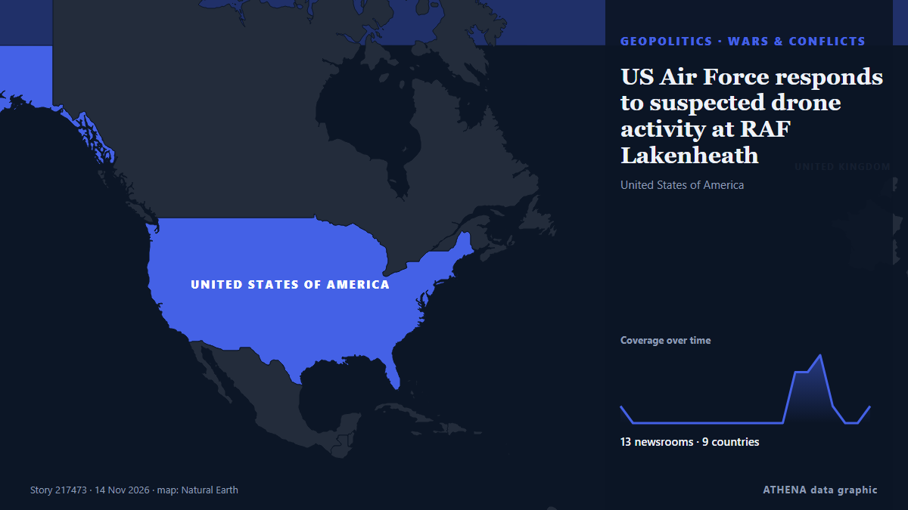

Γεωπολιτική, Πολιτική & Ασφάλεια
ΧορηγούμενοΠαρουσιάζεται από  Cybernetics and Artificial Intelligence Lab Welcome to the Cybernetics and Artificial Intelligence Laboratory, established at the Department of Business Administration of the National and Kapodistrian University of Athens. The lab is headed by Professor Dimitrios Thomakos. The lab aims to do research that can be published in top venues. Our research uses tools and methods of Artificial Intelligence, and lies in the following areas: - Forecasting - Decision making - Cyber security - Finance We are always looking forward to collaborating with exceptional students!
Cybernetics and Artificial Intelligence Lab Welcome to the Cybernetics and Artificial Intelligence Laboratory, established at the Department of Business Administration of the National and Kapodistrian University of Athens. The lab is headed by Professor Dimitrios Thomakos. The lab aims to do research that can be published in top venues. Our research uses tools and methods of Artificial Intelligence, and lies in the following areas: - Forecasting - Decision making - Cyber security - Finance We are always looking forward to collaborating with exceptional students!
Οι τίτλοι των ειδήσεων παρουσιάζονται στα αγγλικά, όπως δημοσιεύτηκαν.

Πόλεμοι & συγκρούσειςUS Air Force responds to suspected drone activity at RAF Lakenheath
No personnel, aircraft or infrastructure at Suffolk site affected, says US military The US Air Force has said it responded to “suspected unauthorised drone activity” on Friday night at an RAF airbase… από The Guardian
| 1 Νοε | 212 |
|---|---|
| 2 Νοε | 316 |
| 3 Νοε | 352 |
| 4 Νοε | 397 |
| 5 Νοε | 328 |
| 6 Νοε | 227 |
| 7 Νοε | 211 |
| 8 Νοε | 200 |
| 9 Νοε | 315 |
| 10 Νοε | 287 |
| 11 Νοε | 254 |
| 12 Νοε | 251 |
| 13 Νοε | 154 |
| 14 Νοε | 1 |
Armenia Stays Out Of European Security Declaration At Dublin Summit
More than 50 leaders are expected in Dublin, with drone teams, exclusion zones and additional Garda resources deployed. από Irish Examiner
Finland reports strike on Russian warship in Baltic Sea
The Finnish military said on Thursday that their forces had detected a “strike” on a Russian warship in the Baltic Sea the previous day, but the security situation in the area remained stable. από Ukrinform (English)
Europe pushes for seat at Ukraine peace talks but lacks unified voice
European nations are seeking an envoy to represent them in talks on ending the Russia-Ukraine war, concerned that a U.S.-backed process will leave them sidelined as Moscow and Washington decide the… από The National Herald
Pope Leo returns to former diocese where he ‘learned to be a shepherd’
The pope is on tour of Peru where he spent two decades as a missionary and bishop. από The Irish News (Belfast)
Zelensky reports continued Starshield restrictions for Ukraine
According to the head of Kiev regime, the US side offered no explanation for what was happening. από TASS (English)
Trump says Gulf allies urged restraint on Iran, admits war hurt Republicans in midterms
With the political constraints imposed by the US midterm elections lifted, Donald Trump may become more erratic and unpredictable. από The Scotsman
Putin suggests no Ukraine compromise in meeting with US envoys
The Russian president says he will not water down his territorial demands to control parts of Ukraine that Russia claims to have annexed. από Free Malaysia Today
Singapore barred Alice Huang from re-entry following investigation
SINGAPORE: Alice Huang, the alleged Chinese spy at the heart of a scandal at chipmaker Nvidia , left Singapore in February and was barred from re-entering following an investigation into possible… από New Straits Times
US envoys Witkoff and Kushner arrive at Kremlin
Kirill Dmitriev added that peacemakers "will prevail" από TASS (English)
Global powers head to Asia with trade, AI, security in focus
The global spotlight turns to Asia as world leaders gather for back-to-back summits — Asean in Manila from Nov 16-18 and Apec in Shenzhen from Nov 18-19. από Free Malaysia Today
Russian ambassador to US Alexander Darchiev dies suddenly at 66
The announcement called Darchiev ‘an outstanding diplomat, an experienced leader, a kind friend, and a mentor’ από The Independent
3 injured, dozens evacuated after Russian drone damages Kyiv medical facility in overnight attack
A downed drone caused a fire at a medical facility in the capital's Shevchenkivskyi district in the early morning, partially destroying its second floor, according to Ukraine's State Emergency… από Kyiv Independent
El Salvador deploys armed robots to fight gangs in Haiti
El Salvador’s President Nayib Bukele has released a video showing armed robots during an operation against gangs. από Al Jazeera English
Six, including a surgeon, killed in Israeli strike on Nasser Hospital in Gaza
Israeli airstrikes in Gaza have killed three Palestinians, including two brothers, according to local medics. από Arab News
Iran's Guards say they targeted a US early-warning radar in Bahrain
The Guards said the strike was in retaliation for what they described as an air attack on a telecommunications tower in Iran's southern Sirik county. από Free Malaysia Today
Russian military officer killed in car explosion in St. Petersburg
A Russian serviceman was killed when an explosive device detonated in his car in St Petersburg on 12 November. από Ukrainska Pravda (English)
France criticises ‘demagogic’ move by Israel to ban hard-left leader Melenchon
PARIS, Nov 13 - France has criticised as \"demagogic\" a decision by Israel to ban French hard-left presidential candidate Jean-Luc Melenchonand another leading figure in his France Unbowed (La… από The Straits Times
Scott Colom, a Democrat, wins Mississippi Senate seat in historic upset
On “Forbes Newsroom,” NAACP President Derrick Johnson discussed the still-unresolved Mississippi Senate race in which Democrat Scott Colom is up by about 2500 against Rpublican incumbent Cindy… από Forbes Business
President Ilham Aliyev attended opening plenary session of the 9th European Political Community Summit - UPDATED
The war in Ukraine will be among issues discussed as Ireland hosts the ninth meeting of the European Political Community. από Evening Standard (London)
Abdul El-Sayed on Democratic leadership, health care access and inspiring a new generation
With New Hampshire and Georgia staying in Democratic hands, Republicans now look to Michigan for a pickup, where Democrat Abdul El-Sayed is competing with Republican Mike Rogers. από France 24 English
Hegseth pins medal on soldier who reprimanded his group for laughing at Tomb of the Unknown Soldier
Hegseth’s group sparked online backlash after laughter at the memorial went viral on Veterans Day. από The Independent
Trump says US does not need Iran deal, directs Vance to focus on domestic corruption
By Bo Erickson WASHINGTON, Nov 12 (Reuters) - President Donald Trump saidon Thursdaythe US does not need a deal with Iran and directedVice President JD Vance, who has played a role in efforts to… από Al-Monitor
LOCAL ELECTIONS 2026: LIVE | First results show ANC support declined in traditional strongholds
Special voting gets underway on Monday and will continue on Tuesday. από SABC News
China accuses US of using spy claims to justify tech blockade
The comment follows claims that Nvidia boss Jensen Huang was the victim of a Chinese espionage plot. από Free Malaysia Today
Ukraine and Russia agree to large-scale prisoner exchange after second day of talks
Thousands of Ukrainians are held in Russian captivity. από The Independent
With US midterms underway, courts rebuff Trump's pressure on state election officials
Federal judges have repeatedly rejected the Trump administration's efforts to wrest control over state voting processes and intimidate state and local elections officials. από Los Angeles Times (World)
Russia-US-Ukraine trilateral talks resume for second day in Abu Dhabi
Rustem Umierov said Ukraine's team is en route to Abu Dhabi for trilateral talks on 10-11 November, with European and NATO representatives also attending. από Ukrainska Pravda (English)
Saudi coalition says intercepted 3 Houthi missiles fired at Riyadh
Saudi-led coalition claims Houthi missile destroyed over Eastern Province The Saudi-led coalition air defences intercepted and destroyed a ballistic missile launched by the Houthis toward the… από Middle East Eye
Democratic leader Hakeem Jeffries announces bid for US House speaker
'I write to humbly request your support in connection with my candidacy to serve as the next Speaker of the House of Representatives,' says Jeffries in letter. από Anadolu Agency (English)
US asks Iraq to shut most Iran border crossings, Iraqi foreign minister says
Nov 8 - The US Treasury has asked Iraq to close all border crossings with Iran except for two as part of Washington's policy of increasing economic pressure on Tehran, Iraqi Foreign Minister Fuad… από The Straits Times
Iran will strike US bases in Europe in any war, warns Rezaei
Iranian officials have explicitly threatened in recent weeks to strike US military bases in Europe if they are used to launch attacks against Iran. από The New Arab
Iran designates Argentina's navy and air force as 'terrorist organisations'
Tehran has designated Argentina’s navy and air force as “terrorist organizations,” Iran’s Foreign Ministry said on Wednesday, in a reciprocal move following Buenos Aires’ designation of the Islamic… από Cyprus Mail
Erdogan calls Israel's war on Gaza an 'ecocide' at UN's COP31
In recent days, heavy rainfall and subsequent flooding destroyed many of the tents and makeshift shelters that Palestinian residents now live in. από The New Arab